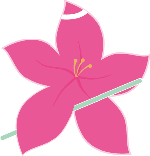
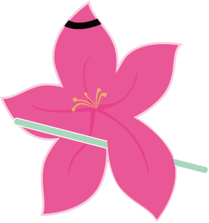
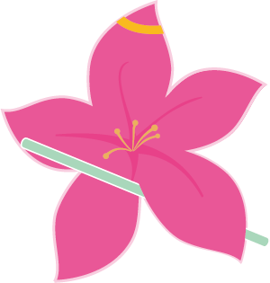
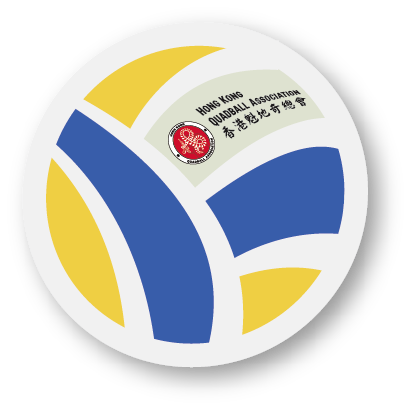
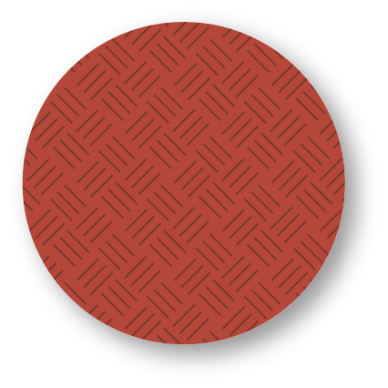
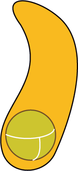

香港魁地奇總會 呈獻
Bauhinia Challenge
洋紫荊挑戰賽
Presented by Hong Kong Quadball Association
一場面向全球球隊嘅魁地奇邀請賽。
An international quadball invitation tournament open to teams worldwide.
關於賽事
About the Event
洋紫荊挑戰賽為香港魁地奇總會主辦之國際魁地奇邀請賽，集合本地球隊，並歡迎世界各地球隊來港切磋交流。
今年賽事將由兩支香港球隊確認參賽，其餘名額會按海外球隊報名情況分配。
The Bauhinia Challenge is an international quadball tournament hosted by the Hong Kong Quadball Association (HKQA), featuring local Hong Kong teams and inviting clubs from around the world to challenge in the heart of Hong Kong.
This year’s edition will include two confirmed Hong Kong teams, with additional spots filled based on international registrations.
賽事背景
Tournament History
首屆洋紫荊挑戰賽於2023年4月舉行，
「Katayaburi東京魁地奇會」遠道來港，
對戰香港球隊「Hongkong Hydras」及「Victorian Dragons」，
並於三場比賽中全部勝出，順利捧盃。
「Katayaburi」曾於《2022年魁地奇亞太球會冠軍盃》取得季軍，
是日本球隊首次訪港參與魁地奇賽事。
The inaugural Bauhinia Challenge took place in April 2023.
Katayaburi Quidditch Tokyo travelled to Hong Kong and won the tournament against local teams
Hongkong Hydras Quidditch Club and Victorian Dragons, winning all three matches.
As the first Japanese quadball team to visit to Hong Kong,
Katayaburi had previously finished third at the 2022 Asian-Pacific Quadball Cup.
首屆洋紫荊挑戰賽於2023年4月舉行， 「Katayaburi東京魁地奇會」遠道來港， 對戰香港球隊「Hongkong Hydras」及「Victorian Dragons」， 並於三場比賽中全部勝出，順利捧盃。
「Katayaburi」曾於《2022年魁地奇亞太球會冠軍盃》取得季軍， 是日本球隊首次訪港參與魁地奇賽事。
The inaugural Bauhinia Challenge took place in April 2023. Katayaburi Quidditch Tokyo travelled to Hong Kong and won the tournament against local teams Hongkong Hydras Quidditch Club and Victorian Dragons, winning all three matches.
As the first Japanese quadball team to visit to Hong Kong, Katayaburi had previously finished third at the 2022 Asian-Pacific Quadball Cup.
賽事資料
Tournament Details
日期Date
18 July 2026 (Saturday)2026年7月18日（星期六）
地點Venue
To be announced.比賽場地有待確認，稍後公佈。
主辦機構Organiser
Hong Kong Quadball Association香港魁地奇總會
報名截止日期Registration Deadline
19 June 2026 (Friday)
2026年6月19日
（星期五／端午節）
報名
Registration
請大家預留7月18日，場地一獲確認，本會將隨即開放報名，敬請期待！ Please mark your calendar for 18 Jul - We will open for registration once the venue is confirmed. Please stay tuned!


賽制與規則
Format and Rules
最終賽制（例如單循環聯賽、三角賽或淘汰賽）將視實際參賽隊數而定， 並會於2026年6月19日後公佈。 The final format (e.g. round-robin, triangular or knockout) will be determined based on the number of participating teams and will be announced after 19 June 2026.
贊助機會
Sponsorship Opportunities
歡迎與香港魁地奇總會及洋紫荊挑戰賽合作，接觸本地及海外關注這項混性別全接觸新興運動的觀眾群。
如欲查詢品牌曝光、展位、冠名贊助等合作方案，請聯絡：
Partner with the Hong Kong Quadball Association and the Bauhinia Challenge to reach local and international audiences of a growing, mixed-gender, full-contact sport.
For sponsorship packages (branding, booths, title sponsor and more), please contact:
魁地奇運動簡介
Introduction to Quadball
魁地奇運動受名著《哈利波特》啟發，將欖球及閃避球兩項緊張刺激的運動融為一體。 比賽時，各隊將派出六至七名球員作賽。球員分成四個崗位，球隊成功把排球（即《哈利波特》中的快浮） 投過球圈即得10分，並可利用閃避球（即《哈利波特》中的搏格）截擊對手。 開賽20分鐘後每隊各派一隊員搶奪金探子（實為置於特定裁判後方腰間的長襪，內裏裝有網球為負重），成功搶得金探子一隊得30分。
魁地奇運動以推廣性別共融平等為宗旨，球員按其性別認同參與，同場較量，每隊場內男、女、非二元或其他性別球員大部份時間不可佔多於三人。
國際魁地奇協會2022年將運動更名為「Quadball」，希望推動魁地奇運動跳出小說幻想世界，邁向專業發展，同時反映場內球員分成四種崗位，以四個皮球對賽。
Inspired by the Harry Potter series, quadball is a sport that combines rugby and dodgeball elements. Each team fields six to seven players across four positions. Teams score 10 points by throwing a volleyball (the "quaffle") through the hoops, and defend or disable opponents using dodgeballs. After the first 20 minutes, one player from each team attempts to catch the snitch (a weighted flag, which has a tennis ball placed inside a sock attached to an official's waist), scoring 30 points if successful.
Gender inclusivity and equality are fundamental to quadball. Players participate according to their gender identity, competing together on the same field. No more than three players identifying as the same gender (including male, female, non-binary, or other identities) may be on the field for most of the time.
In 2022, the International Quadball Association officially renamed the sport "Quadball" to promote its professional development beyond fictional origins, reflecting the four positions and four balls in play.
球員崗位
Player Positions

追蹤手 Chaser 佩戴白色頭巾 White Headband 3×
打擊手 Beater 佩戴黑色頭巾 Black Headband 2×
搜捕手 Seeker 佩戴黃色頭巾 Yellow Headband 1×比賽用球
Game Balls

排球（「快浮」）
Volleyball
1×Played by Chasers and Keepers only

閃避球（「搏格」）
Dodgeball
3×